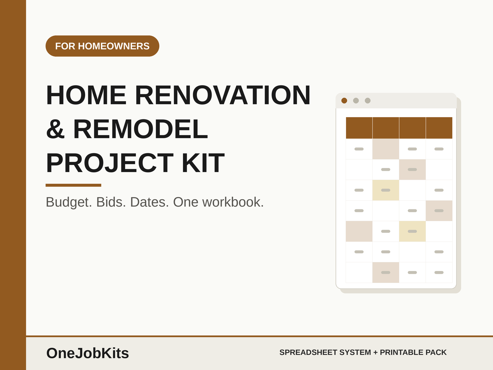

OneJobKits · Kit #21
Home Renovation Cost OS — renovation planner spreadsheet

A remodel rarely goes wrong on the tools. It goes wrong on the paperwork: the budget lives in your head, three bids are scribbled on three pads, a delivery slips a week and nobody notices, and the permit approval is buried in your inbox. A renovation planner spreadsheet earns its keep by putting the homeowner's side of the job — money, bids, dates, orders, permits — on one page.
This page gives you the starter free: one room's budget, a short bids page, and the five prompts to read before you sign anything. Below it is the full kit it comes from — a 7-tab linked workbook with a dashboard that pulls every number by formula. It is an organisational system only: not contractor advice, not building-code advice, and it never tells you which bid to take.
Free download — start with the One-Room Remodel Budget Starter
The One-Room Remodel Budget Starter is a 3-page fillable PDF (88 fields): a one-room budget starter across 11 categories, budgeted vs actual; a short bids & timeline page (3 bids, 8 phases); and a closing page of five prompts to work through before you sign anything.
Download the free Remodel Budget Starter (PDF)Get it on Gumroad instead
What the starter does not do: it plans one room on paper. The full kit below runs the whole job in a linked workbook — where the budget, the bids, the timeline, the orders and the permits all feed one dashboard, so a slip anywhere shows up everywhere it matters.
What's inside the full kit
- Project workbook (spreadsheet, 7 tabs; Excel + Google Sheets) — START HERE (with the organiser-only disclaimer) · Project Dashboard — project details typed once; total budget, actual spend, budget left, % used, contingency remaining, materials ordered value, bid statistics, milestone progress and permit/inspection counts, all pulled by formula · Budget & Cost Tracker — 14 categories, budgeted vs actual, variance and % used calculated, with a TOTAL row · Contractor Bids Comparison — 6 bid rows; bids received, lowest, highest, average, spread and selected-bid total calculated · Project Timeline & Milestones — 12 phases, planned days calculated, status dropdowns, done / in-progress counts · Materials & Orders Tracker — the things you order yourself: quantity × unit cost calculated, total value, received count · Permits & Inspections Checklist — a pre-filled prompt list (5 permit prompts + 8 inspection prompts) with needed/status dropdowns; prompts only — check locally
- Printable Remodel Pack (fillable PDF, 6 pages, 315 fields) — project snapshot & budget at a glance, room-by-room checklist, bid comparison sheet, change order form, materials & delivery log, and the final walkthrough punch list
- Worked example file — the workbook filled with a fictional family's kitchen remodel, its figures recalculated and verified (shown below)
- Setup Guide (PDF, 7 pages) — the 45-minute setup, how to use each tab, the worked-example read-through, the 15-minute weekly rhythm, paperwork habits, the close-out checklist and printing tips
- Pro ($59) adds: the PRO workbook (9 tabs) — the Change Order Log (approved changes only are summed into the Dashboard's REVISED total budget line) and the Warranty & Manuals Register (warranty end dates calculated from install date + warranty months)
A filled example — so you can see the finished thing
The kit's worked example follows Ana & Peter Novak, a fictional family, through their kitchen remodel. The people are invented; the figures are the example file's own — recalculated headlessly by the builder and confirmed:
| From the example file | The numbers, as calculated |
|---|---|
| The budget | $49,500 budgeted · $47,604 actual · 96.2% used · $1,896 of variance left — the Dashboard's headline, pulled from the 14 category rows |
| The bids | 3 received: lowest $45,600 · highest $52,300 · average $48,600 · selected bid $47,900 — compared on the same terms, in one table |
| The timeline | 11 milestones listed: 7 done, 2 in progress — progress the Dashboard counts for you |
| Materials & orders | 12 orders totalling $26,919 · 11 received — the one outstanding delivery is a visible fact, not a surprise |
| Permits & inspections | 8 marked needed · 3 approved · 2 inspections passed — tracked against the prompt list, with the local office as the decider |
That is a remodel run on paper the way it should be: the money, the bids and the dates agreeing with each other, on one dashboard, before anyone asks.
Who it is for
Homeowners planning or already running a kitchen, bathroom or whole-home remodel who are hiring contractors and buying some materials themselves — and who want the money, the bids and the dates visible on one page instead of spread across pads, inboxes and memory.
Who it is not for
Contractors (Kit #2 is the contractor's side of this same job), and anyone wanting design plans, building-code guidance, cost estimates or advice on which contractor to hire. This kit makes no recommendations: it organises your own figures and does the arithmetic, openly.
Questions buyers ask
- I'm a contractor — is this my kit?
- No — this is the other side of the same job. This kit organises the person paying for the work: the homeowner's budget, the bids they receive, their timeline, the materials they order themselves, and their permit paperwork. It deliberately has no job costing, no estimating and no invoicing. The contractor's side is the store's Contractor Estimate & Invoice System (Kit #2) — the two kits are built to face each other across the same project.
- Does it estimate what my remodel should cost?
- No. There are no cost estimates presented as quotes and no recommendations of any contractor. You enter your own budget and your own actuals; the workbook does the arithmetic openly — variance and % used per category, bid statistics across the bids you received — from numbers you typed. It organises your figures; it does not invent them.
- Which permits and inspections do I need?
- Your local permit office decides — requirements differ by city and project. The Permits & Inspections Checklist is a prompt list (5 permit prompts + 8 inspection prompts) with needed/status dropdowns, dates and reference numbers, so the items a remodel commonly involves get checked and tracked instead of assumed. The kit tracks; it doesn't rule — the prompts say so on the tab itself.
- How are change orders handled?
- On Pro, in writing, before the work happens: the Change Order Log prices every agreed change as its own row, and a formula sums approved changes only into a REVISED total budget line on the Dashboard — so the budget the project is judged against is the budget as amended, not the one from before the surprises. The printable pack also carries a paper change order form in both tiers.
- How does the bid comparison help me choose?
- It puts up to 6 bids on the same terms in one table and calculates the statistics: bids received, lowest, highest, average, spread and the selected bid's total — so a lump sum can't hide and an outlier shows itself. Choosing is still yours; the sheet's job is that you choose from the whole picture instead of from three scribbled pads.
- What does Pro add besides change orders?
- The Warranty & Manuals Register: every appliance and fixture with its install date and warranty months — the warranty end date calculates itself — and each manual's location recorded while the paperwork is still on the counter, not two years later when something fails. Pro is the 9-tab workbook (the 7 base tabs plus Change Order Log and Warranty & Manuals Register) in Excel and Google Sheets.
- What does the free starter cover, and what does the full kit add?
- The free One-Room Remodel Budget Starter is 3 fillable pages (88 fields): one room's budget in 11 categories (budgeted vs actual), a short bids & timeline page (3 bids, 8 phases), and five prompts to work through before you sign anything. The full kit runs the whole job: the linked 7-tab workbook with its dashboard, all bids compared, 12-phase timeline, materials orders, permits — plus the printable pack and, on Pro, change orders and warranties.
Prices
Base: $39 · Pro (adds change orders + warranty register): $59 — one-time payment, digital download. No subscription; the files are yours.
Can't find the kit you need?
We build it. Ask us — first asker gets it at half the shelf price. Tell us the job at onejobkits.com and we will build the kit for it.
Related kits
Please know: this is an organisational system only — not contractor advice, not building-code advice, not legal or financial advice. Permit and inspection items are prompts to check with your local permit office; requirements differ by city and project. All example people and figures are fictional (the Novak family is invented, and the example file says so).